区间编码的实现
本文档来源于大二下信息论与编码的第一次大作业。当然，受限于当时姿势水平，算术编码只写了实现，完全没有看理论相关的内容。后来回顾的时候觉得也还蛮有意思的。Elements书上对应13.3节。
1. 区间编码
区间编码是一种基于统计模型的无损压缩算法。G.N.N.Martin在1979年的Video&Data Recording Conference上提交了一篇论文：《区间编码：去除数字信息中冗余的算法》（Range encoding: an algorithm for removing redundancy from a digitised message.），第一次提出了区间编码算法的思想。区间编码的实现都是基于该论文中描述的方法。尽管从本质上说区间编码与算术编码是相同的，但是根据该论文的发表年代，通常认为区间编码算法不受与算术编码算法相关的专利约束。正是因为如此，越来越多的研究人员将目光转向了区间编码算法。
1.1 区间编码原理
区间编码是算术编码的一种变型，它相较于Huffman编码而言，压缩率更高。因为Huffman以bit作为单位进行编码，这限制了压缩率；而区间编码是将需要编码的文件通过多次迭代映射到区间内的一个整数，使得单位bit能表示的信息量更大。
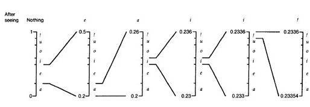
为了简单起见，以”AABCDAAB”为例介绍区间编码的原理。假设总区间的大小为200，统计词频后将符号映射到对应的整数区间内：
| 符号 | 频度 | 积累频度 | 映射区间 | 区间大小 |
|---|---|---|---|---|
| A | 4 | 4 | [0, 99] | 100 |
| B | 2 | 6 | [100,149] | 50 |
| C | 1 | 7 | [150,174] | 25 |
| D | 1 | 8 | [175, 199] | 25 |
则，该字符串编码就是对于区间上下界的运算：
- 原始区间: [0, 199]
- 编码A: [0, 99]
- 编码A: [0, 49]
- 编码B: [25, 37]
- 编码C: [35, 36]
此时精度已经不足以完成剩余的编码，但是观察到，在已经确定区间范围 [35, 36] 后，无论之后的输入是什么，开头的 3 已经确定不会改变（相当于开头的3已经收敛了），因此可以输出 3 后，扩充区间，然后继续进行编码。
- 输出3，扩充区间为 [500, 600]
- 编码D: [588, 600]
- 编码A: [588, 594]，输出5，扩充区间为[880, 940]
- 编码A: [880, 909]
- 编码B: [895, 901]
此时遇到了一些麻烦——假设我们以三位数（10进制）为区间最大值，若接下来区间收敛到 [899, 900]，此时区间的精度不足以继续编码，但是首位数字不相同，达不到输出的条件，那么程序就不能顺利进行下去了，故而产生了两种解决方案：
- 预留缓冲区，将开头的8和9移入缓冲区，待后续编码向900的某一边收敛后输出
- 扩充足够的区间，使得相较于编码的数而言，区间始终是足够大的
因此，我们可以从这个小例子中总结出区间编码的两个主要组成部分——区间的计算，和区间正规化（指的就是区间扩充、区间收敛这两个问题）。下面从实现的角度阐述编码的要点、问题与解决方案。注意：实际上区间编码的实现是二进制的，而且区间的位数范围远比三位要大，这里只是为了方便演示所以选择十进制、区间大小三位。
1.2 区间编码实现
我将主要阐述以下几个部分：
- 编码算法实现
- 编码主要算法
- 解码主要算法
- 问题与解决方案
- 区间扩充与正规化问题
- 区间初始化问题
- 编码结束时区间收敛问题
- 区间自适应问题（未采用）
最后说两点：最初我以为，区间编码最最重要的，保证加解密一致的关键在于“高精度”，也就是尽可能减少整数运算的精度丢失，但这是及其困难的。但后来我发现，最重要的在于加解密过程中，运算精度的一致性，也就是说只要加解密遵循一套既定的精度取舍规则，那么精度高不高也无所谓了，当然，舍弃精度必然会影响压缩效率。我不知道是否有标准，这只是自己实现的一套规则。
此外，本次实现中以字节为单位进行编码。
1.2.1 主要算法
编码即迭代执行以下几个步骤：
- 读入需要编码的码字
- 确定其映射区间
- 计算新的区间
- 高位相同时，输出高位编码并扩充区间
主要代码如下（为简洁起见，进行部分修改）
while (读入8字节){
// 区间计算
R_all = high - low;
tmp = low;
low = tmp + R_all / scale * list[ch-1];
high= tmp + R_all / scale * list[ch];
// 从高位到低位比较区间上下界，若相同则加入输出缓冲区
while ((high ^ low) >> MAXLEN == 0){
加入缓冲区
// 扩充区间
low <<= 1;
high <<= 1;
if (输出缓冲区达到8位){输出并清空缓冲区}
}
}
解码即迭代执行以下几个步骤：
- 读入映射后的数
- 确定其所在区间
- 输出映射区间对应的码元
- 根据其所在区间计算新的区间
主要代码如下（为简洁起见，进行部分修改）
while (1){
// 从高位到低位比较区间上下界，若相同则丢弃
while ((high ^ low) >> MAXLEN == 0){
调整读入的数字
// 扩充区间
high <<= 1;
low <<= 1;
if (byte.cnt == 0){
if (读入)
else{结尾处理}
}
}
输出映射区间对应的码元
// 区间计算
low = tmp + R_all / scale * list[ch-1];
high= tmp + R_all / scale * list[ch];
}
1.2.2 问题与解决方案1-区间扩充与正规化问题
区间编码的一个大难题就是精度丢失。丢失精度导致解码失败的文件，在16进制形式下打开时多呈现为：从错误节点开始连续出现 0xFF 或 0x00 。直观上理解，这是因为越界翻译成了上一个或者下一个区间的元素，导致区间从上越界或从下越界。为了防止精度丢失导致编码失败，必须保证现有的区间长度不能太小。这就涉及到了区间的扩充与正规化。
我最初的实现思路为：当区间过小时，就需要扩充，然后发现这个“过小”是难以界定的，有时算着算着区间就收敛了。因此我不再判断区间是否太小，而是在输出高位的同时进行低位扩充，使得计算区间的有效长度始终保持不变。这就相当于区间的上下界始终维持着一个较大的差。
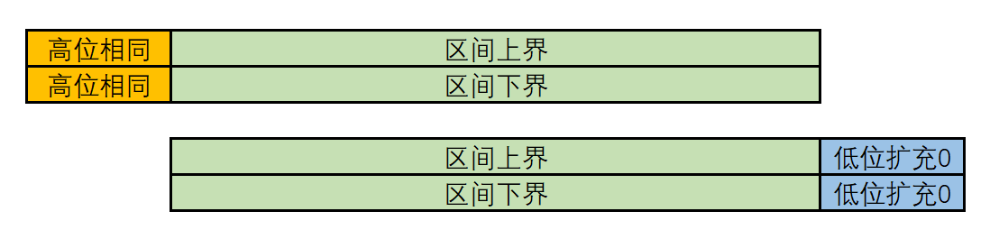
再者就是要防止收敛，例如7999999和8000000。我在区间的有效位左边预留了17位缓冲区，画一个示意图：
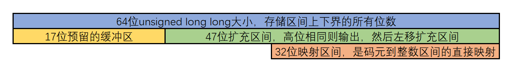
1.2.3 问题与解决方案2-区间初始化问题
若完全按照理论上可行的区间编码方式进行编码，那么输出的编码文件会是一串长长的数字，但是这串数字所对应的最初的区间是无法确定的。举个栗子，假设有如下区间映射：
- A: [0, 99]
- B: [100, 9999]
读入的数字为99999999，那么根本无法译码，因为不知道这一串数字在第一个区间究竟代表9，还是99，还是9999。
解决方案是，在头部输出一串0来帮助确认位置——这相当于规定了一个固定的初始位数，就好像c语言中输出数字时会使用 %08x 来规定输出位数一样。还是上面的例子，此时我规定初始区间大小为 [0,9999] ，读入的数字变成了0099999999，那么我就可以按照初始区间，将这一串数字识别为0099-999999，从而确定第一个区间为 [0,99]。
我在具体实现中将这个初始区间的长度也定为 47。主要是考虑到不能太大（相较于64位ULL），也不能太小（相较于原始的映射区间），因此与计算区间相等就可以了。
1.2.4 问题与解决方案3-编码结束时区间收敛问题
算到最后，我们得到的是区间上下界两个数值，但最后需要的是一个数，所以我直接取了平均数。当然这个问题是很好解决的——在上下区间里任取一个数都可以，因为它所代表的区间是不变的。
此外，解码时也有同样的困惑——什么时候结束呢？我的解决方案是在文件信息里加入了原始文件的大小，在解码收尾时判断：如果大小相等了就结束。
1.2.5 问题与解决方案4-区间自适应问题
这是在计算映射区间时碰到的问题。比如说我给了一个全都是0的文件，那么假若我不知道接下来输入什么，是否还要给其余的数预留空间呢？不给，映射区间就会非对称得太厉害；给了，可能造成浪费。
我最后的解决方案是——如果没有某个数的输入，则预留最低限度区间宽 8（相较于整个区间$2^{32}$的大小而言，即便造成浪费也是微乎其微的。如果某一区间过大，则进行削减。但是，最后这个设想没有启用，因为暂时不需要考虑自适应的问题。
此外，我还查阅到了存储区间的另一种有效方法——询问树+更新树，通过索引获得区间。但是实现起来很麻烦，而且我是按字节存储的，256个符号对应的区间检索起来也挺快的。
1.3 文件 SHA256 值的验证
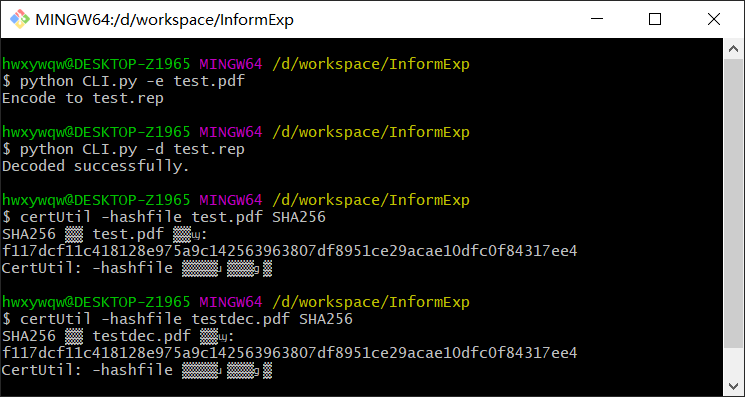1.4 CLI交互
采用python的argparse来实现这个功能。 Argparse 教程 — Python 3.10.4 文档
由于是用c实现的编码，故而不能直接通过函数来进行编码和解码，我就让python跑c编译后的可执行文件来编码和解码。个人感觉如果下一次实现同样的CLI交互的话，最好保证两者是一致的，因为不同语言之间的沟通不太好。比方说我之前还想要实现一个压缩进度条的功能，但不知道怎么弄，如果是python调用python实现的函数的话，就很方便。
支持以下功能：
- -h, –help
- -e , –encode 编码
- -d , –decode 解码
- -r, –ratio 编码时求压缩比
- -s , –sha256 求文件SHA256值（需要输入完整文件路径）
- –dstm 流密码
c的参数传递通过main函数：
int main(int argc, char *argv[]){
char namein[200];
strcpy(namein, argv[1]);
}
python的调用通过subprocess库：
p = subprocess.Popen("encode.exe" + " " + file)
CLI交互界面如下：
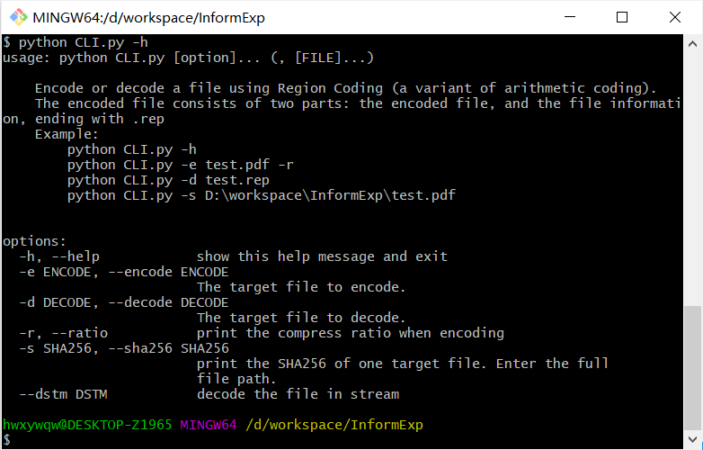放一小段源代码，以此为示例：
if __name__ == '__main__':
DESCR = r'''
Encode or decode a file using Region Coding (a variant of arithmetic coding).
The encoded file consists of two parts: the encoded file, and the file information, ending with .rep
Example:
python CLI.py -h
python CLI.py -e test.pdf -r
python CLI.py -d test.rep
python CLI.py -s D:\workspace\InformExp\test.pdf
'''
parser = argparse.ArgumentParser(usage='python %(prog)s [option]... (, [FILE]...)',
description=DESCR,
formatter_class=argparse.RawDescriptionHelpFormatter)
parser.add_argument("-e", "--encode", help="The target file to encode.")
parser.add_argument("-d", "--decode", help="The target file to decode.")
parser.add_argument("-r", "--ratio", help="print the compress ratio when encoding", action="store_true")
parser.add_argument("-s", "--sha256", help="print the SHA256 of one target file. Enter the full file path.")
parser.add_argument("--dstm", help="decode the file in stream")
args = parser.parse_args()
if args.encode:
file = args.encode
file_compress = os.path.splitext(file)[0] + ".rep"
p = subprocess.Popen("encode.exe" + " " + file)
print("Encode to %s" % file_compress)
time.sleep(1)
if args.ratio:
fsize = os.path.getsize(file)
csize = os.path.getsize(file_compress)
print("compress ratio is %.2f%%" % (100 * csize / fsize))
1.5 代码鲁棒性与安全性
- 文件信息单独储存还是合并到压缩文件中是可选的，并且加入文件大小和 SHA256 值（可选）防止被篡改。
- 通过文件后缀.rep来标识加密后的文件
- 对于空文件或者只有一种输入的文件是可编码的
1.6 流压缩
python CLI.py -dstm test.txt
单次缓冲区定为 2048 Byte，分多次加密。
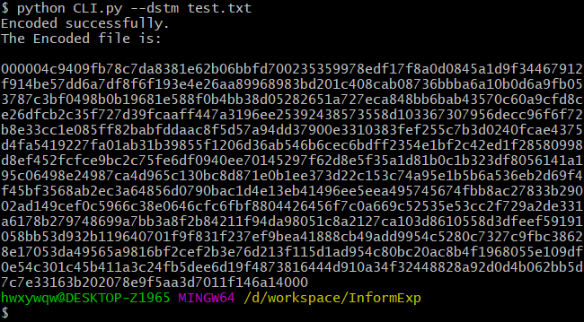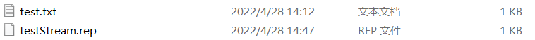
2. 问题
2.1 重复性的文件结构
testfile1的文件内容是： 256 字节 0x00，256 字节 0x01，256 字节 0x02，…，256 字节 0xff，总计 64KiB。testfile2的文件内容是： 16 字节 0x00，16 字节 0xFF，16 字节 0x00，…，总计 8KiB。
PS D:\workspace\InformExp> python CLI.py -e testfile1.txt -r
Encode to testfile1.rep
compress ratio is 100.01%
PS D:\workspace\InformExp> python CLI.py -e testfile2.txt -r
Encode to testfile2.rep
compress ratio is 12.60%
对上述两个文件进行编码，效果如上：
- testfile1进行编码后，其编码文件与原始文件的体积比大于100%，增大了文件大小
- testfile2进行编码后，其编码文件与原始文件的体积比约为12%，起到很好的压缩效果
区间编码是通过递推计算区间上下界对应的范围，来对文件进行编码的。我使用了二进制的方式来读取文件，导致一次进行编码的位数是确定的 8 bits（也就是一字节）。testfile1若按照字节来看，恰好是 0x00 到 0xFF 的均匀分布，这也就导致统计词频后，每个码元对应的区间大小是相同的。假设原始区间为1，那么无论下一个输入是什么，区间都会被缩小到1/256，依旧需要 8 bits 来表示。因此，文件不能被成功压缩。
至于压缩后文件稍微变大，有以下原因：
- 头部加入了一些文件信息
- 为便于区间初始化，编码时会输出约 1 字节冗余的0
- 编码结束后，区间取中间值收敛，会输出约3字节冗余编码
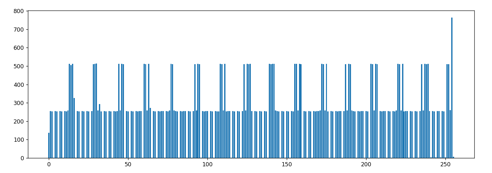
对区间编码后的文件进行以字节为单位的频率统计，可以发现区间编码并没能够破环文件自身的重复性结构，这是因为区间编码是基于词频的编码，单独码元的从其词频所在区间到实数一段区间的映射。此时应当在区间编码前先使用可以破环此种结构的LZ编码——这种编码是基于字典的，天生对这种重复性文件具有很好的压缩效果。
2.2 不同格式的压缩
图片的压缩
PS D:\workspace\InformExp> python CLI.py -e dog1.jpeg -r
Encode to dog1.rep
compress ratio is 99.16%
PS D:\workspace\InformExp> python CLI.py -e dog2.bmp -r
Encode to dog2.rep
compress ratio is 62.04%
为防止图片保存时的质量损失影响压缩效果，我先将图片保存为jpeg格式，再重新保存为bmp格式。统计词频如下表。可以看到：
- jpeg格式下，字节频率分布较为均匀。这是因为jpeg已经是经过压缩的格式，再次进行编码，优化空间已经不大了，所以编码后体积比为99.16%。
- bmp格式下，字节频率分布极为不均匀——其中
0xFF特别多。这是因为bmp格式通过位映射存储（因此文件体积也会较大），其文件的编码与图片具体的颜色关系密切。这种不均匀的词频分布是有利于区间编码的，所以达到了62.04%的压缩效果。
| jpeg | bmp |
|---|---|
 |
 |
| 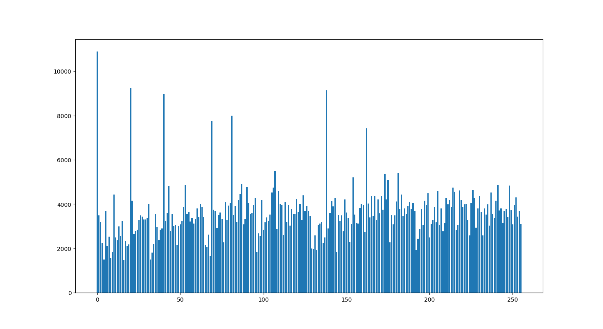 | 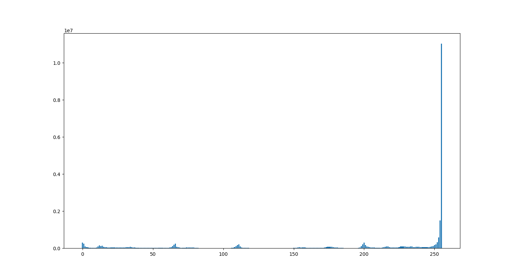 |
其余文件的压缩
PS D:\workspace\InformExp> python CLI.py -e decode.exe -r
Encode to decode.rep
compress ratio is 67.27%
我压缩了解码用的.exe文件，效果非常好，猜测该文件的字节频率分布不均匀。统计后发现确实如此——其中有非常多的 0xFF。此外，我对其他一些常见文件类型也进行了词频统计，发现压缩效果与其文件结构关系密切。
| 文件格式 | 统计图 |
|---|---|
| 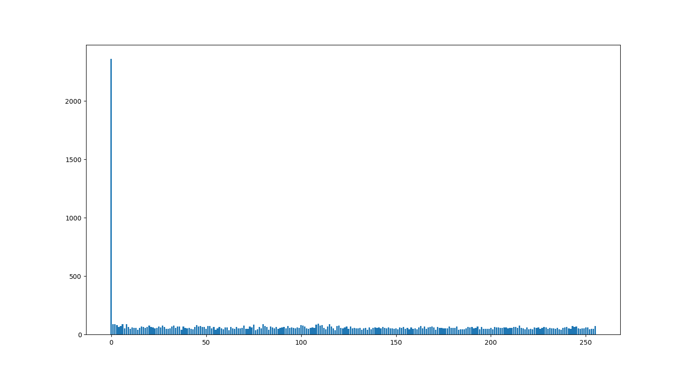 | 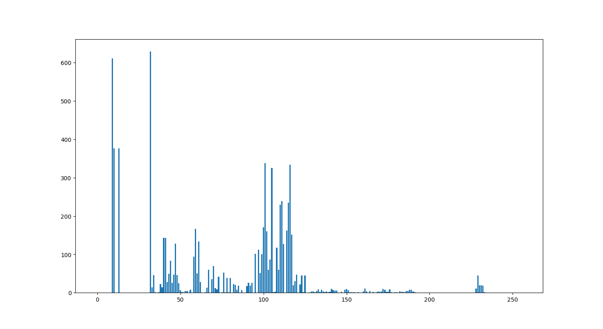 |
| .docx | .cpp |
| 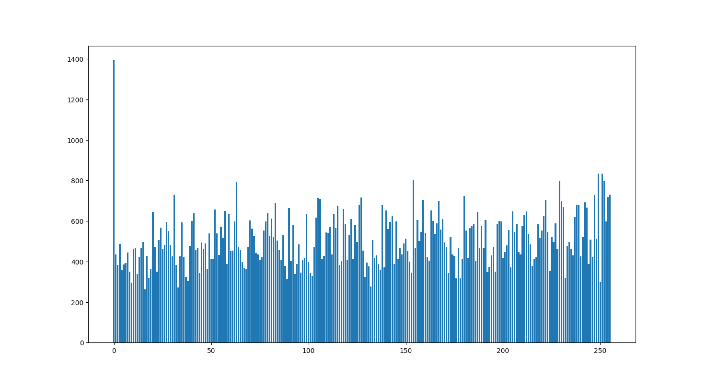 | 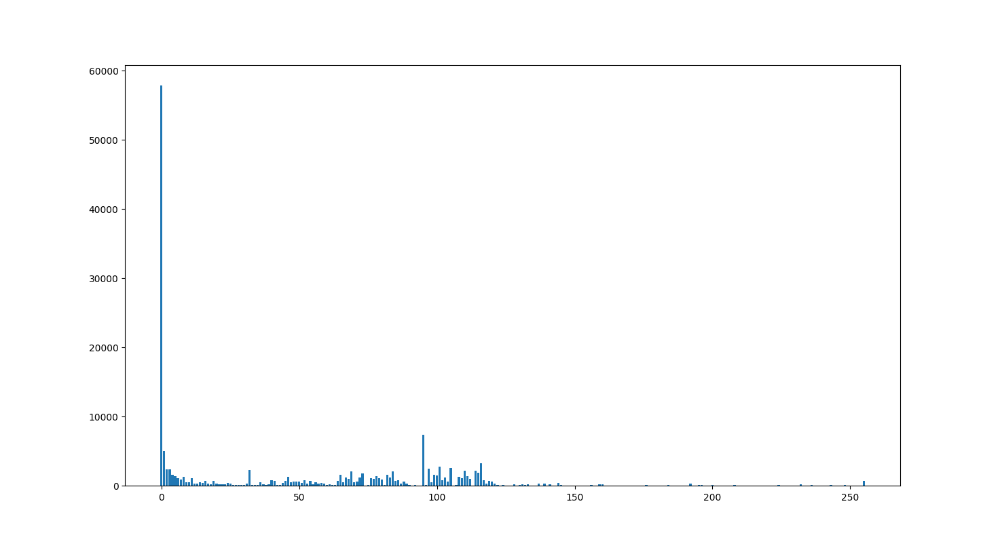 |
| .jpg | .exe |
| 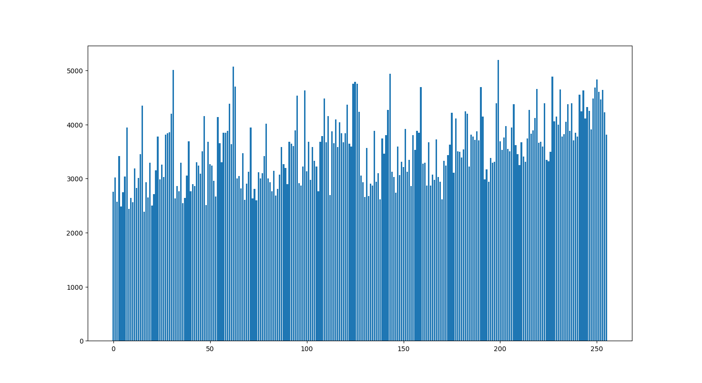 | 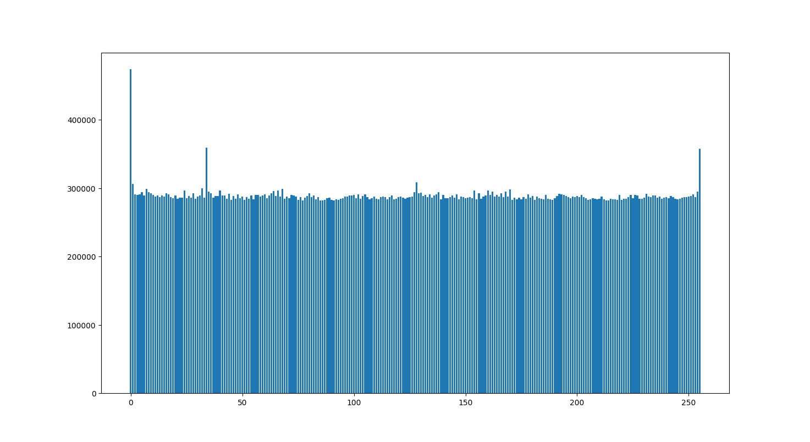 |
| .png | .mkv |
| 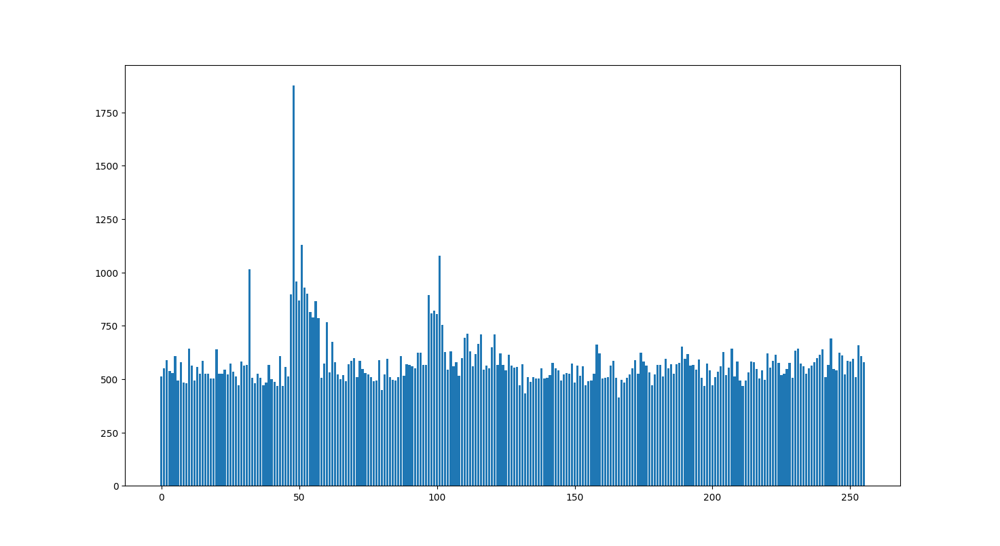 | 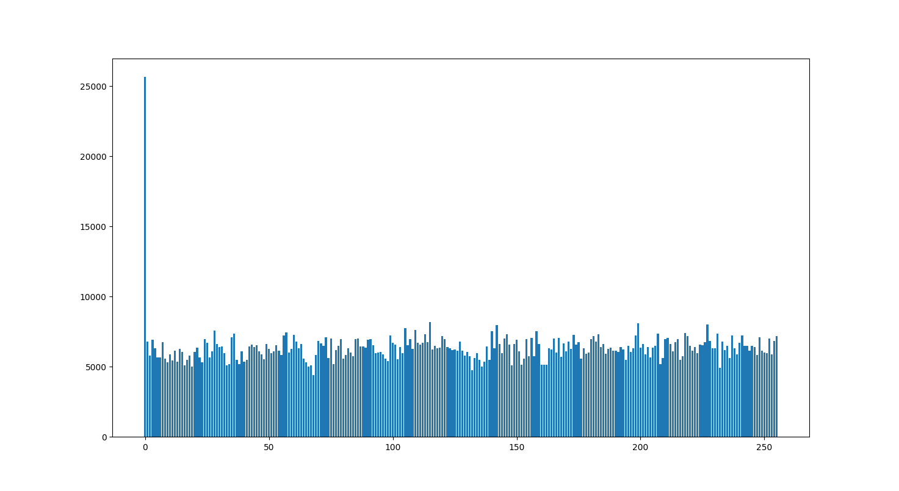 |
| .pptx |
2.3 黑洞！
如果将一个超大的文件压缩几百次，$L_n/n$也只会无限趋近于其极限，也就是熵$H(S)$，而不会。这是因为一张图片所含有的信息量是固定不变的，不能用无限小的编码来表示。下图分别为进行一轮编码和十轮编码后，文件的字节统计结构。可以看到此时分布已经非常均匀了——这样再压缩下去也不会有多好的效果。
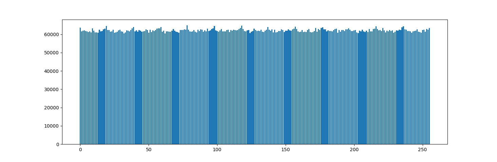